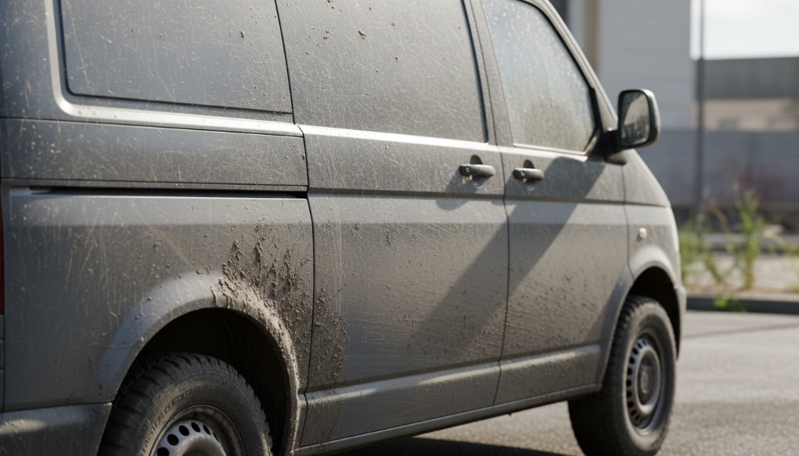
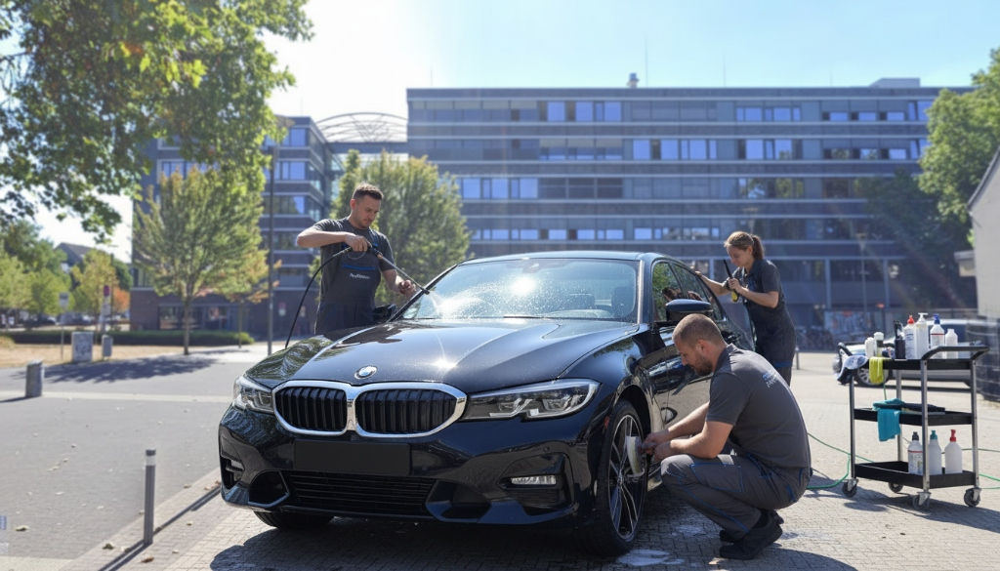

Sicherheit und Optik in einem. Matte, vergilbte Scheinwerfer mindern nicht nur den Wert Ihres Fahrzeugs, sondern sind auch ein Sicherheitsrisiko bei Nacht und können zum Nichtbestehen des TÜVs führen. Wir bringen den kristallklaren Durchblick zurück.
Sorgfältige Reinigung der Scheinwerfer und Schutz der umliegenden Karosserieteile durch spezielles Abklebeband.
Abtragen der verwitterten Schicht durch feiner werdende Schleifstufen, bis die Oberfläche ebenmäßig ist.
Maschinelles Aufpolieren, um die volle Transparenz und den ursprünglichen Glanz wiederherzustellen.
Langfristiger Schutz vor erneuter Vergilbung durch eine spezielle UV-beständige Keramikversiegelung.
Durch unsere hochwertige UV-Versiegelung bleibt das Ergebnis bei normaler Pflege für mehrere Jahre erhalten.
Ja, professionell aufbereitete Scheinwerfer erfüllen die gesetzlichen Anforderungen und verbessern das Lichtbild deutlich.


Lassen Sie Ihre Scheinwerfer jetzt vom Profi aufbereiten.
Jetzt Termin anfragen